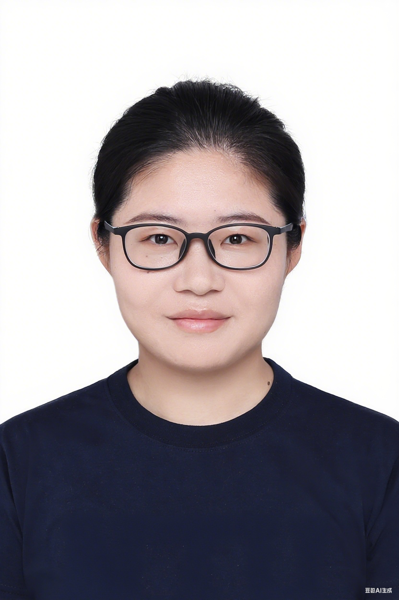

About

I am a postdoctoral researcher at The Chinese University of Hong Kong, Shenzhen (CUHK-SZ),
working with Prof. Chaoyu Quan. My research concerns
structure-preserving numerical methods for gradient flow systems.
Prior to joining CUHK-SZ, I was a postdoctoral fellow at Nanjing University of Aeronautics and
Astronautics (2023–2025), working with Prof. Hong-lin Liao. I obtained my Ph.D. in 2023 from the
School of Mathematics at Southeast University, under the supervision of Prof. Zhi-zhong Sun,
with a dissertation on finite difference methods for the one-dimensional Burgers and Korteweg–de Vries
equations.
-
Postdoctoral Researcher, CUHK-Shenzhen
Mentor: Prof. Chaoyu Quan
2025.10 – present
-
Postdoctoral Researcher, School of Mathematics, NUAA
Mentor: Prof. Hong-lin Liao
2023.7 – 2025.6
-
Ph.D. in Mathematics, Southeast University
Advisor: Prof. Zhi-zhong Sun
2017.9 – 2023.6
-
B.S. in Information and Computational Science, Southeast University
2013.9 – 2017.6
Research Interests
- Runge–Kutta methods and linear multistep methods for gradient flow and phase-field models
- Finite difference schemes for nonlinear evolution equations
Publications
Names in bold indicate the listed author. Corresponding
author marked where applicable.
See also: Google Scholar · ResearchGate
Preprints & Submitted
-
Hong-lin Liao, Xuping Wang & Cao Wen.
Average energy dissipation rates of additive implicit-explicit Runge–Kutta methods for
gradient flow problems.
arXiv: 2410.06463, 2024.
2026
-
Hong-lin Liao, Tao Tang, Xuping Wang & Tao Zhou.
A class of refined implicit-explicit Runge–Kutta methods with robust time adaptability
and unconditional convergence for the Cahn–Hilliard model.
Mathematics of Computation, 2026, 95(359): 1293–1325.
doi: 10.1090/mcom/4090
-
Juan Li & Xuping Wang (Corresponding).
Error analysis of stabilized convex splitting BDFk method for the molecular
beam epitaxial model with slope selection.
Journal of Computational Mathematics, 2026, 44(1): 165–190.
doi: 10.4208/jcm.2410-m2024-0001
2025
-
Xuping Wang, Xuan Zhao & Hong-lin Liao.
A unified framework on the original energy laws of three effective classes of
Runge–Kutta methods for phase field crystal type models.
SIAM Journal on Numerical Analysis, 2025, 63(4): 1808–1832.
doi: 10.1137/24M1701770
-
Hong-lin Liao & Xuping Wang.
Average energy dissipation rates of explicit exponential Runge–Kutta methods for
gradient flow problems.
Mathematics of Computation, 2025, 94(354): 1721–1759.
doi: 10.1090/mcom/4015
2024
-
Hong-lin Liao, Xuping Wang & Cao Wen.
Original energy dissipation preserving corrections of integrating factor Runge–Kutta
methods for gradient flow problems.
Journal of Computational Physics, 2024, 519: 113456.
doi: 10.1016/j.jcp.2024.113456
2021
-
Xuping Wang, Qifeng Zhang & Zhi-zhong Sun.
The pointwise error estimates of two energy-preserving fourth-order compact schemes
for viscous Burgers equation.
Advances in Computational Mathematics, 2021, 47(2): 23.
doi: 10.1007/s10444-021-09848-9
-
Xuping Wang & Zhi-zhong Sun.
A second order convergent difference scheme for the initial-boundary value problem of
Korteweg–de Vries equation.
Numerical Methods for Partial Differential Equations, 2021, 37(5): 2873–2894.
doi: 10.1002/num.22646
-
Qifeng Zhang, Yifan Qin, Xuping Wang & Zhi-zhong Sun.
The study of exact and numerical solutions of the generalized viscous Burgers
equation.
Applied Mathematics Letters, 2021, 112: 106719.
doi: 10.1016/j.aml.2020.106719
2020
-
Jin-ye Shen, Xuping Wang & Zhi-zhong Sun.
The conservation and convergence of two finite difference schemes for Korteweg–de
Vries equations with the initial and boundary value conditions.
Numerical Mathematics – Theory, Methods and Applications, 2020, 13(1): 253–280.
doi: 10.4208/nmtma.OA-2019-0038
-
Qifeng Zhang, Xuping Wang & Zhi-zhong Sun.
The pointwise estimates of a conservative difference scheme for Burgers
equation.
Numerical Methods for Partial Differential Equations, 2020, 36(6): 1611–1628.
doi: 10.1002/num.22494
Grants
-
NSFC Youth Science Fund: 基于平均耗散速率对隐显Runge-Kutta方法的优化与应用
PI · Grant No. 12501551
2026年~2028年
-
NSFC General Program: 相场模型保原能量耗散结构的多级时间离散与分析
Co-investigator · Grant No. 12471383
2025年~2028年